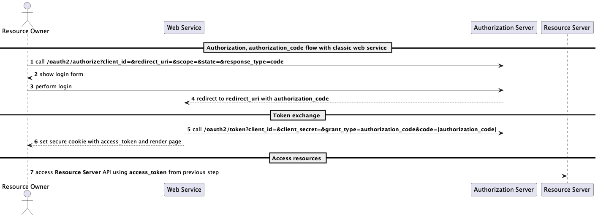
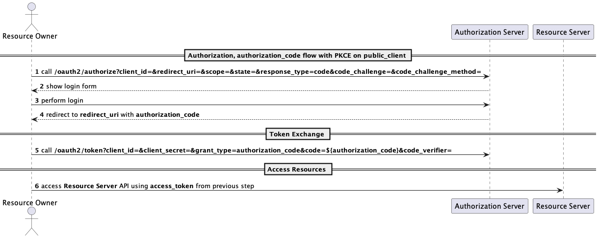

Introduction🔗
In this article I'd like to share the results of my research on how to prolong user session lifetime for OAuth public clients securely. You can skip this part if you are already familiar with OAuth protocol.
OAuth definition🔗
OAuth 2.0 is an open authentication specification that provides us a secure mechanism to access secured third party resources without sharing passwords. This mechanism involves the following parties:
- resource owner (user);
- client (application);
- resource server (secured api that stores user data);
- authorization server.
Where the user is using application (client) which wants to access resource server with authorization server issued tokens.
A good example would be a Google calendar extension. The developer of an extension needs to access users' calendars via Google calendar API in order to do this he needs to use Google OAuth to receive user tokens.
OAuth implementation🔗
To support authentication in the simplest form, OAuth server should implement the following endpoints:
- authorize endpoint - the one that initiates the login flow and renders login form;
- token endpoint - the one that exchanges grant to tokens;
The most basic flow is called authorization_code. First, user initiates the login by visiting authorize endpoint which
renders the login page. As soon as credentials are entered and validated the user is redirected back to application that
initiated the login with success or error request parameters. In case of success he would retrieve authorization_code
that is then exchanged to access_token / refresh_token pair by the user of token endpoint.
Diagram describing the authorization_code flow:🔗

Here we can see some parameters in both endpoints, lets' dive into them and check each endpoint API closely.
Authorize endpoint parameters🔗
client_id- id of the registered client in the Authorization Serverredirect_uri- redirect uri that was defined during client creationscope- authorization part of the authentication flow, what APIs users of the client will be allowed to use on theresource serverstate- random string to prevent CSRF attacksresponse_type- the type of the response user wants to receive, in our case it is "code" which refers toauthorization_code
Token Endpoint parameters🔗
client_idclient_secretgrant_type- type of grant, that was issued by authorization server as a handle to receive tokens for requested user;code-authorization_codeas a temporary random value that works as a handle to receive tokens;
Client and client authentication method types🔗
The example we have seen describes the flow of confidential client authorization using authentication method
called client_secret_post, meaning that user should send client_secret to token endpoint using POST HTTP method.
OAuth specification describes different types of clients such as confidential and public. In layman terms,
confidential is a type of client that can "securely" store secrets without leaking them to malicious users and most
often it is a backend, whereas public clients are browser or mobile based apps, where secrets can be found via source
code review.
OAuth specification also states the different client authentication methods, widely used ones are:
client_secret_post- it is when the application MUST sendclient_secreton token endpoint requestsnone- in this case client is allowed to retrieve tokens from token endpoint without use of any secrets;
You may start thinking why would I need client_secret and the answer is simple, it is the token that proves the
identity of the client and allows your application receive tokens, such that no one else could, unless your secret is
compromised. Why is identity proof needed for client?
authorization_code is weak from security standpoint, it may be hijacked in the process either during redirect or from
logs etc. or lets' imagine if there was no client_secret at all, then it would open the endpoint to CSRF and
enumeration attacks.
Public clients and PKCE extension🔗
Now lets' focus on the second client authentication method: none. It is useful for public clients that are unable to
store and use secrets. As previously said this authentication method does not require application to
send client_secret, to prove the identity of the app there was introduced OAuth 2.1 specification with Proof Key for
Code Exchange extension to the existing flow.
In short, it is adding a couple of new parameters to authrorize and token endpoints:
code_challenge-- represents some hashed string, used in authorize endpoint;code_challenge_method-- the hashing method, used in authorize endpoint;code_verifier-- original string, used in token endpoint;
The diagram describing PKCE public client flow:🔗

To use PKCE extension application MUST provide hashed code_challenge during authorize endpoint call that OAuth Server
MUST store, then at the moment of token verification OAuth Server will validate that code_challenge matches and will
validate that code_challenge_method(code_verifier) is equal to code_challenge.
This extension mitigates CSRF attacks. Lets' imagine that attacker crafted a webpage to handle code returned from
authorization server. Now in order to successfully exchange the code to tokens he would need to send code_verifier
too, which is very hard to guess from code_challenge.
Diagram describing CSRF attack flow🔗
TODO CSRF ATTACK DIAGRAM
Also, some mobile operating systems allow registering multiple handlers for the same deeplink allowing malicious handlers
catch the authorization_code and thanks to PKCE this attack vector becomes useless.
Now, as we established the definition of public_client with the none client authentication method along with PKCE
extension, we can think whats next.
Token Endpoint is capable of returning not only access_token but refresh_token too and the latter one is nuanced
for public_clients. As previously said public_clients are not safe to store secrets and refresh_token in this case
is also the one that should not be leaked to the malicious users.
Solutions🔗
To deal with this obstacle there are numerous strategies, in order of security guarantees:
-
no refresh token;
Security Requirements:
- OAuth server MUST support CORS in headers
- OAuth server MUST require absolute
redirect_uri authorization_codegrant type MUST be protected using PKCE- Clients MUST enforce PKCE flow
- Clients MUST protect from CSRF using
stateparameter and PKCE
Client should use iframe in which it will send oauth authorization requests along with a cookie that was issued on initial successful authentication via Authorization Server, this way use will It is similar to how firebase work which is discussed in this article.
-
use
refresh_tokensSecurity Requirements:
- MUST either "rotate" refresh token OR use "sender-constrained" tokens
- MUST either set a maximum lifetime OR expire if the refresh token has not been used within a specific amount of time
- MUST NOT extend the lifetime of the new refresh token beyond the lifetime of the initial refresh token
-
use sender constrained refresh tokens:
The main idea is to bind OAuth issued tokens to clients, restricting malicious users reusing them.
There are different RFCs describing the possible implementations:-
RFC-8705: Mutual TLS Client Authentication and Certificate bound access tokens
It uses hash of the client certificate used during TLS handshake.
This way access and refresh tokens are bound to the client certificate and if it differs from one that was initially negotiated then further access to resources or token refreshed will be restricted. -
OAuth 2.0 Demonstrating Proof-of-Posession at the Application Layer (Draft)
-
OAuth 2.0 Token binding (Draft)
-
use short-lived refresh tokens that are updated on each token refresh request;
but it allows malicious users to catch the token and successfully use it up to the lifetime of the accessToken.
lets' say accessToken has 15 minutes lifetime and the refreshToken is 1 hour.
if malicious client catches tokens at any point of time, he is able to use them for 15 minutes and as soon as malicious user initiates refreshToken OAuth server will know there was a breach issuing the complete authentication flow for the legitimate client.
-
Alternatives🔗
More traditional solution that requires a bit more effort would be to use backend for frontend that performs OAuth flows and stores the tokens and secrets in "secure" storage, as it is done in the beginning of the article, see.
Security Requirements:
- Client MUST be registered as a "confidential client"
- Clients store the access token and refresh token in the "secure" server environment
- Clients SHOULD implement PKCE and Authorization Servers MUST enforece PKCE, if used or cofigured
- Clients MUST protect aginst CSRF using state or nonce parameter
- The server establishes a session between the frontend and backend using a session cookie with the "HttpOnly" and "secure" attributes set
TLDR🔗
- the more security guarantees the better
- always use PKCE even in the backend for frontend solution
- always use
nonceorstateto prevent CSRF - exact matching of redirect URIs
- enforce https in the redirect URIs
- do not use
implicit_grantauthorisation flow - when issuing refresh tokens to public clients:
- MUST rotate or bind refresh tokens to the clients
- MUST limit the lifetime of the refresh token